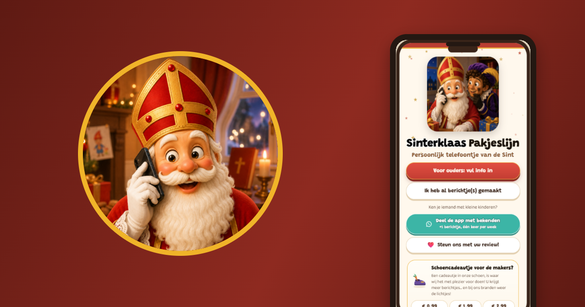

Sinterklaas belt uw kind persoonlijk op
U vult in wat Sinterklaas weet: de naam van uw kind, een compliment en een taakje. Daarna geeft u de telefoon door en krijgt uw kind een echt telefoontje.
- Een echte Sint-stem, geen robot
- U schrijft zelf elk woord
- Gratis te gebruiken, geen abonnement
Uit het pakhuis van Flying Dutchman Studios
Privacybeleid · hello@flyingdutchmanstudios.app